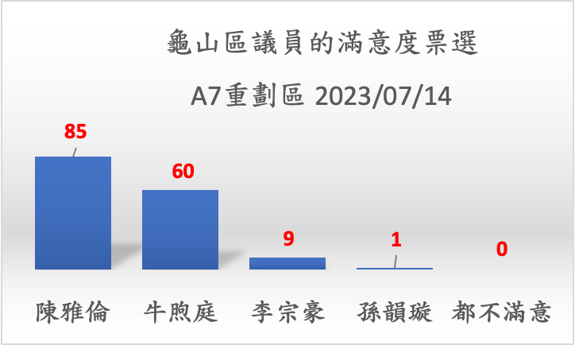
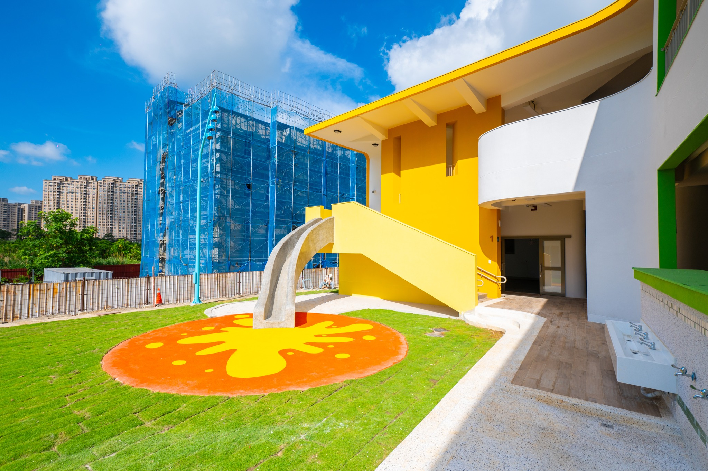
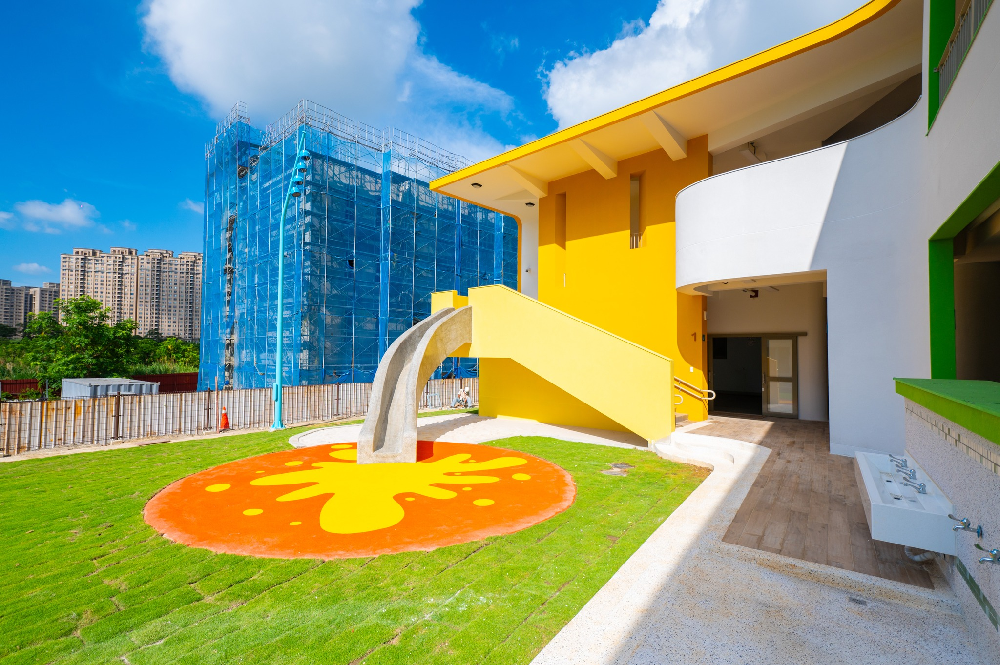

A7 交流管道 - 議員交流
議員通訊錄
龜山區 第02選區 市議員選舉
市議員名額 4, 婦女保障名額 1, 選舉人 110,567, 人口 141,565


市議員名額 4, 婦女保障名額 1, 選舉人 110,567, 人口 141,565
選擇類別
{{post.no}} -
{{post.title}}
- 政黨: {{post.party }}
- 服務處: {{post.address}}
- 電話: {{post.telephone}}
- 郵箱：{{post.mail}}
龜山區議員 OKR 關鍵結果
居民票選 期望的 龜山議員 2023年 關鍵成果及 支持率: 2023/01/08 統計資料- B.3 建構綠化生態環境: 活化滯洪池成為公園綠地, 以每年活化兩座以上為目標。並且能廣邀居民參與特色公園的規劃。 38%
- A.4 強化區域交通規劃: 配合市長1280交通月票，增闢區域公車路線。讓居民能有捷運站到社區的公共接駁巴士或公車路線。 36%
- A.1 加速宜居城市建設: 增加公立幼兒園，托幼/拖老中心或長照中心。14%
- D.1 促進全民就業環境: 舉辦林口龜山大型廠商招募活動，A7設立職訓中心 針對當地產業開設課程。 12%
目標與關鍵結果 Objectives and Key Reslults, OKR 中的關鍵結果 是衡量績效的重要指標。希望議員能針對競選時的 政見目標訂定年度關鍵結果。
在年度考核時才能有符合民意的良好績效！
議員的承諾
A. 健全都市發展A.1 加速宜居城市建設
- 牛煦庭:
- 3. 負重前行有目標,再為龜山討公道: 7. 電線桿地下化 改善市容
- 陳雅倫:
- 2. 爭取婦幼福利: 持續増加公托、共融式公園,並在龜山設置臨時托育中心延長收托時間,要求增加托育人員待遇及爭取托育補助加碼。
- 5. 提升長輩照顧: 持續争取龜山新設老人文康中心,擴充關懷據點功能,要求大敬老愛心卡使用範圍,照顧銀髮族好生活。
- 孫韻璇:
- 2. 教育興建要推動: 3. 防堵校園霸凌及毒品入侵校園問題。
- 3. 交通發展要快速: 3.爭取移除電桿、清除電線,電地下化美化市容。
- 李宗豪:
- 2. 交通建設: 3. 增設路口行人庇護區停等安全受保障。
- 3. 兒童文教: 2. 擴增公托、公幼、親子館,安心托育,友善育兒。
- 4. 運動文化: 1. 增設大型國民運動中心,提倡全齡運動。 2. 擴增不同類型運動場地,提升市民運動氣。 3. 爭取培育體育運動選手相關補助與場地。
- 5. 社會關懷: 1. 推廣多元日間照護中心,完善托老托幼服務。 2. 增設老人文康中心提供多課程,豐富高齡生活。 3. 關懷低收入戶、身心障礙、急難救助, 增加社會福利保障。 4. 關懷新住民文化、語言學習、就業權利。
A.3 加速都市整體發展
- 牛煦庭:
- 3. 負重前行有目標,再為龜山討公道: 2. 大崗高中獨立設校、大坪頂公園擴大範圍; 6. 幸福國中操場完成行政程序、開工動土 8. 尋找迴龍公有空間:活動中心、便民服務、圖書分館進駐
- 陳雅倫:
- 3. 投資教育環境: 持續監督大崗高中設校進度、持續督促文青國中小設校完成、爭取龜山新設圖書館增加兩歲專班、動學校雙語教學、本土語言課程及智慧教室數量
- 孫韻璇:
- 2. 教育興建要推動: 1.推動興建完全中學,推動設大崗高級中學建置,促成『大崗完全中学』! 2.推動完善校園,爭取『幸福國中』操場增設,及解決停車場問題。
- 4. 休閒育樂要推動: 1.爭取新興里、文青里、楓福里增建里民活動中心供所在里民與周邊里民使用促進里民的交流。 2.爭取新建大坪頂國民運動中心新建完善體育設施提升居民生活品質。 3.爭取規劃豐達重劃區增設親子館完善親子教育設施提升孩子文化品質。 4.正視新移民的權及需求落實新移民照顧與輔導措施營造新住民友善生活環境。
- 李宗豪:
- 1. 都市發展: 3. 要求市府續辦A7二期開發落實土地公平正義。
- 3. 兒童文教: 1. 加速文青國中小及大崗高中建校進度,滿足就學需求。 4. 更新校園環境及教學設備,提供優質學習環境。
- 牛煦庭:
- 2.「桃園新選風」共同政見: 2. 要求市府比照北280推出桃大眾運輸通勤月票,爭取公預算,培養捷運運量
- 3. 負重前行有目標,再為龜山討公道: 1. 棕線捷運進度,隨時監督、誠實回報
- 陳雅倫:
- 4. 改善交通路網: 繼續監督捷運棕線贵質進度再增加山公车路網、完善候車系統、引進多元共享運具、設置交通寧靜區、繼續監督A7二期計畫道路打通進度。
- 孫韻璇:
- 3. 交通發展要快速: 1.加速推動長庚轉站營整合機捷、客、汽機車、等多元運具! 以減輕目前交通阻塞問題。 2.加速推動捷運棕線盡速興建。
- 李宗豪:
- 2. 交通建設: 1. 加速捷運棕線開工完善北北桃生活圈路網。 2. 爭取跨區公車路網滿足通勤需求。 4. 人行道、騎樓設置無障礙坡道讓長者、行動不便者及嬰兒車能夠安全通行。
B.1 提升環境保護作業
- 牛煦庭:
- 3. 負重前行有目標,再為龜山討公道: 7. 增補清潔隊人力改善市容
- 牛煦庭:
- 2.「桃園新選風」共同政見: 1. 要求市府加強稽查力道,爭取空污、水污智慧檢測機制
- 孫韻璇:
- 5. 環保治安要落實: 2.提升環境權,空汙廢水監測減排。
- 李宗豪:
- 1. 都市發展: 1. 要求煉油廠限期停工遷廠爭取原規劃高科技園區。
- 牛煦庭:
- 3. 負重前行有目標,再為龜山討公道: 3. 文青國中小準時落地、活化滯洪池增加公園綠地; 5. 第一公墓遷葬完成,爭取大山頂萬坪共融公園
- 陳雅倫:
- 7. 觀光休閒產業: 將虎頭山風景特定區、楓茶米休閒農業區、龜山苗露營區、桃林鐵道、南溪自行車道整合成《大桃園生態都會公園》引人潮前來龜山消費,振興市場活絡地方經濟:推動大山風景特定區核定將歴史與人文故事融入周邊商圈創造地方緊榮。
- 孫韻璇:
- 1.文化發展要提升: 2. 公墓遷移,爭取第一公墓比照蘆竹生命園區建置, 及美化綠地興建公園、停車場,打造出溫馨的國區。
- 4. 休閒育樂要推動: 5.爭取南溪河岸成為自然生態文化教室推廣環境教育
- 5. 環保治安要落實: 1.改善道路噪音汙染,還市民一個清靜城市。
- 李宗豪:
- 3. 兒童文教: 3. 推動特色公園及大型共融式遊戲場,實現兒童遊戲權。
C.1 強化經費合理分配
- 牛煦庭:
- 2.「桃園新選風」共同政見: 4. 要求政府嚴守財政紀律,爭取建設準時落地,反對活動大撒幣
- 3. 負重前行有目標,再為龜山討公道: 4. 專預算補助眷村國宅「中庭公園化」
- 孫韻璇:
- 5. 環保治安要落實: 3.警消配備制度升級,及在職執勤保險加碼,提供更高額的保障。
- 李宗豪:
- 6. 支持警消: 1. 爭取補充警察人力及消防員額, 2. 寬列預算精實裝備。 3, 爭取義警/民防/義消/義交/巡守隊志工之設備經費補助。
- 陳雅倫:
- 1. 挺18公民權: 世界上許多民主國家透過法律保障18歲青年享有公民權利及義務,台灣是亞洲首屈一指的民主國家,複決投下同意票支持18歲公民權修憲,完成代平權,民主台灣再向前!
- 牛煦庭:
- 1. 「桃園新選風」共同價值: 1. 市政透明、議會問責、政策公平競爭、政治新陳代謝
- 牛煦庭:
- 2.「桃園新選風」共同政見: 3. 要求政府推動公寓大廈管理升級,爭取政府輔導機制、提供專業詢服務
D.1 促進全民就業環境
- 陳雅倫:
- 6. 支持青年發展: 繼續推動龜山設青創塞地挺青年創業、爭取青年就業津貼加碼、持續監督龜山社會住宅興建、督促國民運動中心興建進度。
- 孫韻璇:
- 1.文化發展要提升: 1. 爭取『桃園燈會』 『眷村文化節』、『新住民特色文化節』等大型戶外文活動,帶動觀光人潮,推廣龜山之美。
- 李宗豪:
- 1. 都市發展: 2. 加速推動工五工業區擴大創造就業機會。
政策實行進度
點擊項目A-D，展開/收起 內容 以下資訊摘錄個議員所發佈的公開資訊, 如有遺漏或誤植 請議員們提供修正意見後就會更正。A.1 加速宜居城市建設
選擇類別
{{post.Type}} -
{{post.Title}}
- 活動日期: {{post.Date}}
A.2 落實智慧城市規劃
選擇類別
{{post.Type}} -
{{post.Title}}
- 活動日期: {{post.Date}}
A.3 加速都市整體發展
選擇類別
{{post.Type}} -
{{post.Title}}
- 活動日期: {{post.Date}}
A.4 強化區域交通規劃
選擇類別
{{post.Type}} -
{{post.Title}}
- 活動日期: {{post.Date}}
B.1 提升環境保護作業
選擇類別
{{post.Type}} -
{{post.Title}}
- 活動日期: {{post.Date}}
B.2 強化空汙管制作業
選擇類別
{{post.Type}} -
{{post.Title}}
- 活動日期: {{post.Date}}
B.3 建構綠化生態環境
選擇類別
{{post.Type}} -
{{post.Title}}
- 活動日期: {{post.Date}}
C.1 強化經費合理分配
選擇類別
{{post.Type}} -
{{post.Title}}
- 活動日期: {{post.Date}}
C.2 提高公民參與市政
選擇類別
{{post.Type}} -
{{post.Title}}
- 活動日期: {{post.Date}}
C.3 提升政府行政透明
選擇類別
{{post.Type}} -
{{post.Title}}
- 活動日期: {{post.Date}}
C.4 建立數字城市規劃
選擇類別
{{post.Type}} -
{{post.Title}}
- 活動日期: {{post.Date}}
D.1 促進全民就業環境
選擇類別
{{post.Type}} -
{{post.Title}}
- 活動日期: {{post.Date}}
D.2 穩健區域產業發展
選擇類別
{{post.Type}} -
{{post.Title}}
- 活動日期: {{post.Date}}
D.3 完善創業投資環境
選擇類別
{{post.Type}} -
{{post.Title}}
- 活動日期: {{post.Date}}
選民問題匯總
選擇類別
主旨: {{post.Type}} -
{{post.Title}}
- 編號: {{post.No}}
- 類別: {{post.Category1}}: {{post.Category2}}
- 日期: {{post.Date}}
- 說明:
- 辦法/建議:
- 執行:
龜山議員 滿意度調查 2023/07/08-14
A7民意調查紀錄
為加強 龜山議員及市政府與區域居民的溝通。社區網站將平日社群中居民意見匯總於網站，讓議員監督及市府施政能符合民意。在2023/６月 A7重劃區大小事 有相當多的居民對相臨的林口市政有高度的羨慕感！是桃園市府需要警醒並加速對上龜山的建設。相較林口的整潔的市容，全面公園化的乾式滯洪池，民意代表及市府能貼近社群直接即時處理民眾問題等等。都是隸屬桃園的龜山遠遠不及的！
2022選舉年 A7居民 對地方建設 期望改善的民意調查
為讓地方官員及民意代表能了解A7重劃區居民對此地的施政期望, 於2022/3/24日使用臉書 A7新林口-社區網站 所做的意見調查, 於2022/03/28 日整理 居民希望改善的前十大議題。 4天內約有3,200次點閱, 依據票選數目由多到少排序如下： 臉書的民意調查仍持續開放，讓居民持續表達意見！- 環境保護 - 加強管制華亞科學園區的有害物質排放，有效管理區域空氣污染。 334票
- 社區環境 - 加速執行龜山第三公墓的遷移作業。253 票
- 社區環境 - 開發A7重劃區的公園綠地, 美化滯洪池, 增加兒童遊戲場所, 親子共融公園及A7特色網美景點。225票
- 交通規劃 - 增設A7區域內公共交通, 例如建立社區共享的小巴。157票
- 環境保護 - 加強區域環境清潔工作, 讓街道不再充斥垃圾。145票
- 公共建設 - 增設區域圖書分館。 137票
- 環境保護 - 儘速終結大埔垃圾轉運站, 讓露天堆放的垃圾能撤離A7重劃區。133票
- 公共建設 - 落實龜山國民運動中心的規劃。92票
- 交通規劃 - 規劃A7重劃區的自行車路線及建構專屬車道。 87票
- 交通規劃 - 增設公共機車停車場, 讓機車能有充足的停車位. 72票
- 交通建設 - 強化A7聯外公車網的規劃, 配合1200專案 增加公車路線及班次。建立機場捷運銜接台北捷運的步行加速輸送帶。
- 公共建設 - 規劃區域大型超市, 包含公辦新式傳統市場。
- 公共建設 - 強化A7重劃區的區域行政作業，建立A7重劃區的地政/戶政 事務營業處, 派出所, 親子館, 圖書館, 社會住宅等設施。
- 交通建設 - 完整規劃區域人行道, 建立行人友善步道。排除行人道障礙, 嚴格取締違規機車的任意停放。 並注意行人道及公園的夜間照明。 及早打通廣18及19間的人行陸橋。 加強區域道路安全設計。
- 公共建設 - 加速大崗高中的規劃。
- 公共建設 - 加速廣18 & 19的建設進度, 並加速開放郵政公園的使用。
- 公共建設 - 增加區域的公共托兒所, 幼稚園設置。
- 交通建設 - 加速推動 龜山林口地區輕軌捷運規劃, 及桃園棕線捷運規劃。
- 交通建設 - 加速落實A7重劃區的原有交通規劃, 包含變一案: 文學路延伸與樂善一路延伸 T字道路計畫, 文化二路 延伸案 等規畫案。
各項議題的規劃與檢討 請點擊下面主題, 展開內容
環境保護類
以往居民關切的異味問題很可能主要不是來自 華亞園區排放的 VOCs。而是由於大埔垃圾轉運站堆積到四層樓高的露天暴露的代轉運垃圾。
而此臭味問題根本上就是市府環保局因垃圾焚化爐量能不足所產生的問題。包含牛煦庭議員, 陳雅倫議員曾多次質詢過的臭味及新聞媒體追蹤的
A7重劃區的臭味主要製造者就是市府環保局! 將在議題 07.環境保護 - 儘速終結大埔垃圾轉運站 中討論。
華亞科技園區所排放的有害物質主要包含 揮發性有機化合物 VOCs 及 酸雨，在社區網站中都有深入的探討。請參考社區網站 環境保護 - 認識VOCs, A7空汙大數據, 酸雨監測, 等相關網頁資訊。
由於以往A7重劃區的臭味問題 引發居民的熱烈討論，這個議題再度被推舉為首要議題。 但有害物質VOCs 未必會產生異味，對健康的危害卻遠大於垃圾的臭味。 對空汙有害物質問題, 市府環保局的回應永遠是“查無不法”，也就是現有中央法規是"無法可管"。
此一問題可以先經由 行動參與及公民科學 由民間公益團體 對有害物質排放大戶，依據 Environment, Social and Governance, ESG 指標讓企業對社會做出應有的責任。 藉由ESG的與論壓力讓企業能儘速做出合理的改善措施。 請先參考社區網站 對政府的改善建言, 及 行動參與及公民科學 等相關討論。
桃園市府應做長期規劃，有效讓區域內各企業在有害物質排放, 酸雨控制等能建立逐年降低的KPI。而不是“坐視不管”！ 議員們應該先充實自身的相關知識, 或尋求民間相關公益團體/專業分析設備 的協助 才能做有效的施政監督！
華亞科技園區所排放的有害物質主要包含 揮發性有機化合物 VOCs 及 酸雨，在社區網站中都有深入的探討。請參考社區網站 環境保護 - 認識VOCs, A7空汙大數據, 酸雨監測, 等相關網頁資訊。
由於以往A7重劃區的臭味問題 引發居民的熱烈討論，這個議題再度被推舉為首要議題。 但有害物質VOCs 未必會產生異味，對健康的危害卻遠大於垃圾的臭味。 對空汙有害物質問題, 市府環保局的回應永遠是“查無不法”，也就是現有中央法規是"無法可管"。
此一問題可以先經由 行動參與及公民科學 由民間公益團體 對有害物質排放大戶，依據 Environment, Social and Governance, ESG 指標讓企業對社會做出應有的責任。 藉由ESG的與論壓力讓企業能儘速做出合理的改善措施。 請先參考社區網站 對政府的改善建言, 及 行動參與及公民科學 等相關討論。
桃園市府應做長期規劃，有效讓區域內各企業在有害物質排放, 酸雨控制等能建立逐年降低的KPI。而不是“坐視不管”！ 議員們應該先充實自身的相關知識, 或尋求民間相關公益團體/專業分析設備 的協助 才能做有效的施政監督！
2023/07/06
李宗豪: 近日有許多民眾反應，大埔垃圾轉運站的異味飄散到周邊，氣味讓人難以接受。
我通報環保局後，跟大家報告情形如下：
本項議題需要 追蹤 桃園第2座焚化爐、觀音生質能中心原預計於2021/12月試運轉，目前何時能正式作業。並需要龜山區議員能要求市府做出大埔轉運站終止使用的時程表。嚴格監督整體作業進度。
- 因上週欣榮焚化爐故障因素，造成場內垃圾無法正常轉運，於本週二7/4已恢復正常轉運。
- 為避免垃圾持續堆置造成異味產生，龜山區清潔中隊已加派人力提高轉運量能，預計在本週末能將貯存水位降低。
- 有關這幾天異味比較重的原因，因為轉運的垃圾堆置多天，當挖土機開挖裝載時垃圾異味會比較重，加上這幾天風大且吹西南風，故味道容易飄散到附近區域。
- 我已要求環保局持續加強場內消毒及除臭劑的噴灑，以避免異味飄散。
本項議題需要 追蹤 桃園第2座焚化爐、觀音生質能中心原預計於2021/12月試運轉，目前何時能正式作業。並需要龜山區議員能要求市府做出大埔轉運站終止使用的時程表。嚴格監督整體作業進度。
聯合新聞網 2023/07/09:
桃市清潔隊人手不足 比雙北累
桃園升格迄今，每日垃圾量由80萬公噸增至127萬公噸，成長幅度達6成之多，每日一般垃圾清運量及每人每日垃圾量都是六都之冠。但據統計，桃園市環保局清潔隊員平均每員要服務836人，相比台北市每員服務481人、新北市每員服務750人，人力明顯吃緊。
議員李宗豪、牛煦庭表 示，目前桃園市清潔隊員人數雖已達環保署規定員額，但環保署計算方式以行政區人口數作為分配標準，忽略大量學生和流動人口；加上龜山區較廣、生活圈零碎，清潔隊員晚上還需分2班收垃圾，勤務太過繁重，都導致龜山清潔隊員流動率高，不少人希望調到隔壁的桃園區，讓龜山往往成「屎缺」。
環保局環境清潔稽查大隊長林立昌表示，市府今年招考450名清潔隊員，其中290人補齊退休人員，錄取者8月起陸續進用，另160人為新增名額，因人事費用編列在明年度預算，將在2024年上線。
請參考 社區網站 - 環境衛生管控 對此一議題的討論。 多數里長都成立了 環保志工在默默為地方付出，但遠遠無法因應 各建案工作人員每天任意丟棄的垃圾。 市府環保局有權利對建商開罰，市府如不願得罪建商就應該負責清除滿街的垃圾。
只要對照新北市林口區的環境整潔，就應該知道桃園市環保局的績效有多差。居民這麼卑微的期望能有市府官員能重視！
桃園升格迄今，每日垃圾量由80萬公噸增至127萬公噸，成長幅度達6成之多，每日一般垃圾清運量及每人每日垃圾量都是六都之冠。但據統計，桃園市環保局清潔隊員平均每員要服務836人，相比台北市每員服務481人、新北市每員服務750人，人力明顯吃緊。
議員李宗豪、牛煦庭表 示，目前桃園市清潔隊員人數雖已達環保署規定員額，但環保署計算方式以行政區人口數作為分配標準，忽略大量學生和流動人口；加上龜山區較廣、生活圈零碎，清潔隊員晚上還需分2班收垃圾，勤務太過繁重，都導致龜山清潔隊員流動率高，不少人希望調到隔壁的桃園區，讓龜山往往成「屎缺」。
環保局環境清潔稽查大隊長林立昌表示，市府今年招考450名清潔隊員，其中290人補齊退休人員，錄取者8月起陸續進用，另160人為新增名額，因人事費用編列在明年度預算，將在2024年上線。
請參考 社區網站 - 環境衛生管控 對此一議題的討論。 多數里長都成立了 環保志工在默默為地方付出，但遠遠無法因應 各建案工作人員每天任意丟棄的垃圾。 市府環保局有權利對建商開罰，市府如不願得罪建商就應該負責清除滿街的垃圾。
只要對照新北市林口區的環境整潔，就應該知道桃園市環保局的績效有多差。居民這麼卑微的期望能有市府官員能重視！
環境建設類
有關龜山第三公墓遷移事項 請參考社區網站 - 建設願景。
Facebook 2023/07/08
邱筱婷
: 山尾滯洪池公園 - 2022/3/9遊戲場動工，
2022年底完工，2023年7/1開放玩水。從一開始設計單位提出的簡易式組合遊具到現在的親水設施。預算從最早的70萬一路請議座們幫忙爭取到最後核定的300多萬。當初是希望能做出和新北市陽光公園類似的水道戲水空間，可惜經費有限，所以只能先做個簡單版的。
依據 社區網站 - A7站區開發案興辦事業計畫 各項計畫書, 尤其是 林口特定區/ 配合改善庶民生活行動方案 - 機場捷運沿線站區周邊土地開發 - A7站區開發案興辦事業計畫書 : 細部計畫書
A7重劃區的綠地規劃包含 (需要更新?)
依據 社區網站 - A7站區開發案興辦事業計畫 各項計畫書, 尤其是 林口特定區/ 配合改善庶民生活行動方案 - 機場捷運沿線站區周邊土地開發 - A7站區開發案興辦事業計畫書 : 細部計畫書
A7重劃區的綠地規劃包含 (需要更新?)
- 公園用地 - ５處 總面積 2.64公頃
- 公園兼滯洪池用地 - 17處 總面積 11.09公頃
- 綠地 - 重劃區邊緣 計畫面積 3.60公頃
- 廣場用地 - A7 捷運站兩側 總面積 1.32公頃
交通規劃類
如何讓自行車能當作最後一哩的交通工具？是希望有行人及自行車區分的專用道路規劃。在新北市林口區就有許多範例。A7重繪區需要建立自行車道專用路線讓多數社區能利用Ubike
但不危及行人步行安全的規劃。
初步構想請參考 社區網站 - 公共運輸檢討, 並希望有更多的腦力激盪！
初步構想請參考 社區網站 - 公共運輸檢討, 並希望有更多的腦力激盪！
A7建案應該都有機車停車位不足的問題, 未來街道上一定會車滿為患。 請參考 社區網站 - 停車規劃,
希望有關單位或議員能協助 建立A7重劃區全面性機車停車位的規劃。徹底解決未來社區內部機車停車位不足問題。
Facebook 2023/07/12 605B
班次應增加: 請問有搭乘過605B班次的朋友，也覺得7:30-8:00要增加至少1個班次嗎，7:00-8:10，足足相隔70分鐘才一班車，難怪上班尖峰時間也難利用
住在樂善國小、樂學路一帶要通勤一定要騎車，A7機捷的機車格在1200月票優惠下，更快滿格沒辦法好好停車，形成亂象而且搶車位行人和騎士都行動有礙，也很想停合法停車位呀！就算大坪林公車即將通車，真的能夠緩解此現象嗎？....希望班次能錯開與605B
互補，不然就是605B班次真的要增加了
壹蘋果 2023/07/13 通勤月票上路12天破千萬人次使用: 北中南三大生活圈公共運輸通勤月票上路第13天，累計至昨(7/12)日為止已約有51.7萬人次加值購買公共運輸通勤月票方案，已約有1,064.9萬人次使用月票搭乘各類公共運具。 51.7萬人次加值購買月票方案，包含基北北桃生活圈37.4萬人次。 使用搭乘部分，累計至昨日為止，已約有1,064.9萬人次使用月票搭乘各類公共運具，包含臺鐵87萬人次、捷運(含輕軌)528萬人次，其中基北北桃生活圈496萬人次
配合1200專案 增加公車路線及班次。建立機場捷運銜接台北捷運的步行加速輸送帶。 2023/06/25 陳雅倫 臉書: 感謝機捷公司採納雅倫建議機捷增班 縮短班距！ 預計7/3再增一班加班車8/1再增三班加班車。 我會繼續爭取機捷增班以及隔音罩
壹蘋果 2023/07/13 通勤月票上路12天破千萬人次使用: 北中南三大生活圈公共運輸通勤月票上路第13天，累計至昨(7/12)日為止已約有51.7萬人次加值購買公共運輸通勤月票方案，已約有1,064.9萬人次使用月票搭乘各類公共運具。 51.7萬人次加值購買月票方案，包含基北北桃生活圈37.4萬人次。 使用搭乘部分，累計至昨日為止，已約有1,064.9萬人次使用月票搭乘各類公共運具，包含臺鐵87萬人次、捷運(含輕軌)528萬人次，其中基北北桃生活圈496萬人次
配合1200專案 增加公車路線及班次。建立機場捷運銜接台北捷運的步行加速輸送帶。 2023/06/25 陳雅倫 臉書: 感謝機捷公司採納雅倫建議機捷增班 縮短班距！ 預計7/3再增一班加班車8/1再增三班加班車。 我會繼續爭取機捷增班以及隔音罩
加速推動 龜山林口地區輕軌捷運規劃, 及桃園棕線捷運規劃。
加速落實A7重劃區的原有交通規劃, 包含變一案: 文學路延伸與樂善一路延伸 T字道路計畫, 文化二路 延伸案 等規畫案。
主要道路的開通問題 - 包含文學路延伸等項目, 已獲得中央的經費補助。目前應該是按計劃進行。請參考 社區網站 - 未來規劃
主要道路的開通問題 - 包含文學路延伸等項目, 已獲得中央的經費補助。目前應該是按計劃進行。請參考 社區網站 - 未來規劃
公共建設類
龜山國民運動中心相關資訊可參考 社區網站 - 建設願景。
目前應該只有規劃案，仍無經費的困境！ 所以需要議員們持續加強監督力道。
議員林俐玲、陳雅倫、牛煦庭 爭取結果 自由時報 2022/04/30 斥資6億 龜山運動中心年底發包!有望。
體育局長莊佳佳答詢說，龜山國民運動中心原預估施工經費三億三千萬元，受物料上漲等因素影響，總經費提高到六億元，市府將使用統籌分配款、分三年逐年編列預算，預計2022年底就能發包動工。
議員林俐玲、陳雅倫、牛煦庭 爭取結果 自由時報 2022/04/30 斥資6億 龜山運動中心年底發包!有望。
體育局長莊佳佳答詢說，龜山國民運動中心原預估施工經費三億三千萬元，受物料上漲等因素影響，總經費提高到六億元，市府將使用統籌分配款、分三年逐年編列預算，預計2022年底就能發包動工。
規劃區域大型超市, 包含公辦新式傳統市場。
強化A7重劃區的區域行政作業，建立A7重劃區的地政/戶政 事務營業處, 派出所, 親子館, 圖書館, 社會住宅等設施。
A7 多數為建案都需要高樓雲梯車, 但桃園市雲梯車 僅17輛 居六都之末
以往改善中的項目包含：
A7 多數為建案都需要高樓雲梯車, 但桃園市雲梯車 僅17輛 居六都之末
以往改善中的項目包含：
-
設立郵局辦事處/郵筒 - 目前文青里似乎連投遞的郵筒都沒有？ 最近的郵局設在文化里。樂善里有兩個郵筒 請參考 社區網站 - 公共服務
陳雅倫議員 2022/05/02 臉書: 因應陳雅倫議員的建議，郵局短期會先設置「龜山文青郵政代辦所」提供周邊社區便民的郵政服務，預計 2022/05/03開始營運。 就是在合宜住宅區 台慶不動產裡面 - 設置警察局派出所 - 距A7重劃區最近是 龜山分局大埔派出所 請參考 社區網站 - 機關學校
蕃薯藤 2023/07/13 打造龜山區旗艦公園加速大崗高中設校:桃園容積代金挹注公共建設
張善政市長 指出，過去政府對於都市計畫公共設施開闢，只能仰賴編列預算或等待民間申請容積移轉捐贈方式取得土地，地方上長久期盼的道路打通、大面積公園綠地及開闢學校等需求，受限於土地徵收費用極高，每年開闢的數量及進度都有限。目前市府已完成第一階段容積移轉代金的盤整作業，其中除了公園、綠地及學校用地的取得外，亦包含許多瓶頸及一般道路開闢等人行環境改善案件。對應各都市計畫的容積移轉代金收入，可即刻啟動挹注於用地取得經費，完整取得用地後進行實際開闢，儘早提供各項公共設施服務。
工務局長汪在宙說，市府將運用林口都計容積移轉代金優先取得龜山大坪頂公園用地，打造龜山區的旗艦型公園，藉由全齡化設計，營造具備社交性、群聚性、活動使用性、舒適及安全性的空間，適合不同年齡層孩童的遊戲場域，符合在地民眾需求，持續創造公共空間更多元的價值，讓市民享有更多的綠地空間；另外公園南側的大崗高中預定地，也將以容積移轉代金收入逐年取得學校用地，同步因應校地需求面積縮減，報請內政部納入林口都市計畫專案通盤檢討變更，以市地重劃方式加速土地有效利用。
張善政市長 指出，過去政府對於都市計畫公共設施開闢，只能仰賴編列預算或等待民間申請容積移轉捐贈方式取得土地，地方上長久期盼的道路打通、大面積公園綠地及開闢學校等需求，受限於土地徵收費用極高，每年開闢的數量及進度都有限。目前市府已完成第一階段容積移轉代金的盤整作業，其中除了公園、綠地及學校用地的取得外，亦包含許多瓶頸及一般道路開闢等人行環境改善案件。對應各都市計畫的容積移轉代金收入，可即刻啟動挹注於用地取得經費，完整取得用地後進行實際開闢，儘早提供各項公共設施服務。
工務局長汪在宙說，市府將運用林口都計容積移轉代金優先取得龜山大坪頂公園用地，打造龜山區的旗艦型公園，藉由全齡化設計，營造具備社交性、群聚性、活動使用性、舒適及安全性的空間，適合不同年齡層孩童的遊戲場域，符合在地民眾需求，持續創造公共空間更多元的價值，讓市民享有更多的綠地空間；另外公園南側的大崗高中預定地，也將以容積移轉代金收入逐年取得學校用地，同步因應校地需求面積縮減，報請內政部納入林口都市計畫專案通盤檢討變更，以市地重劃方式加速土地有效利用。
加速廣18 & 19的建設進度, 並加速開放郵政公園的使用。
Facebook 2023/07/14 陳雅倫稱:
過去雅倫經過爭取經費、籌備設校等重重關卡，成功向教育部申請新興地區新設學校的專案，全國僅17所學校通過，龜山的文青國中小就是其中之一。
一路上從無到有、到現在文青幼兒園已完工，國小校舍也預計在2023年12月完工，過程中我跟所有家長都一樣心急，也都希望工程順利安全，未來我會持續緊盯學校活動中心、二期校舍及國中部的進度。

過去雅倫經過爭取經費、籌備設校等重重關卡，成功向教育部申請新興地區新設學校的專案，全國僅17所學校通過，龜山的文青國中小就是其中之一。
一路上從無到有、到現在文青幼兒園已完工，國小校舍也預計在2023年12月完工，過程中我跟所有家長都一樣心急，也都希望工程順利安全，未來我會持續緊盯學校活動中心、二期校舍及國中部的進度。
